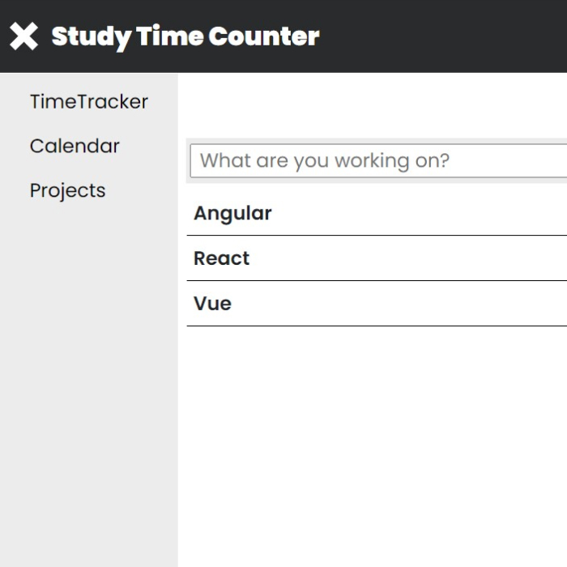
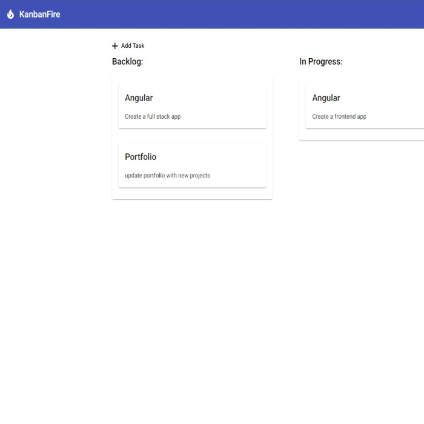
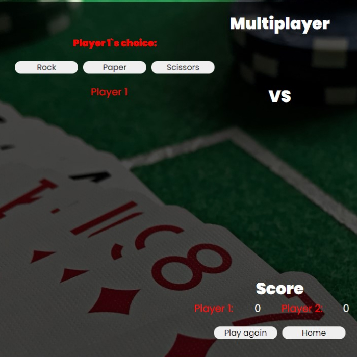
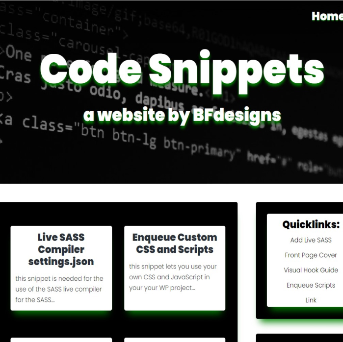

Projects
Description and screenshots of my work:
Study Time Counter
Study Time Counter application with a fake "backend"
A time counter application where a project can be named, counter can be started and stopped. The actual count gets saved into a list on the timetracker view and the projects view. On the timetracker view the count can be restarted and stopped again. Projects can be deleted on the projects view. There are some error messages if the user tries to delete a project while counting. The digital clock shows the correct time, and the date is also shown in the bottom left corner. Data is being persisited to localstorage. Please note this is v1.0 therefore the calendar functionality is not yet implemented.
KanbanFire
Full stack Kanban Board with Firebase backend

This is a simple Kanban board application with Firebase backend. The frontend is built with Angular. Tasks can be added, dragged and dropped between columns, they can be updated and deleted on double click.
Rock/Paper/Scissors
Fun version of the classic Rock/Paper/Scissors game.
This is a Rock/Paper/Scissors game. It has a choice of Single Player or on screen Multiplayer options.
In Single player mode you are competing against a the computer. There is a score counter feature as well to see who is winning in the long term.
Code Snippets
This website is powered by the Genesis Framework of Wordpress
This Project is a blog style website created in Wordpress with the Genesis Framework to have myself a little storage
so that I can have my most frequently used code snippets all in one place. Snippets are embedded from as Gists from GitHub.
Body Mass Index

A simple app to calculate one`s BMI with a fun visual twist.
This project was one of my first ever to be finished. The app makes a simple calculation
from user input data and reveals it.
According to that number it categorizes the user into one of three groups
and renders a funny comparison image.
To-Do list App

A simple To-Do list application built with React.
This is a simple To-Do application built with React. This was my first project built with the library.
To-Do lines can be added, they can be marked completed or deleted. Please note this project is work in progress.
Timer App

A watch and stopwatch app to count time.
The clock shows the actual time getting data from
the computers own clock. Stopwatch can be started, stopped, cleared. On submit a line of text is rendered with the lenght of the current session.
This data is saved into a JSON file. With the use of JSON-server NPM package.
Session data can be retrieved from db.JSON once everything is properly set up for the app to work.
Please see README on GitHub.
© Balazs Ferencz 2020